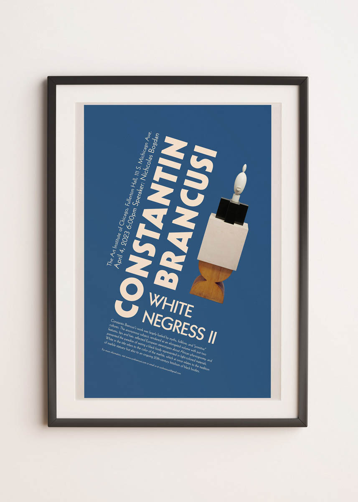
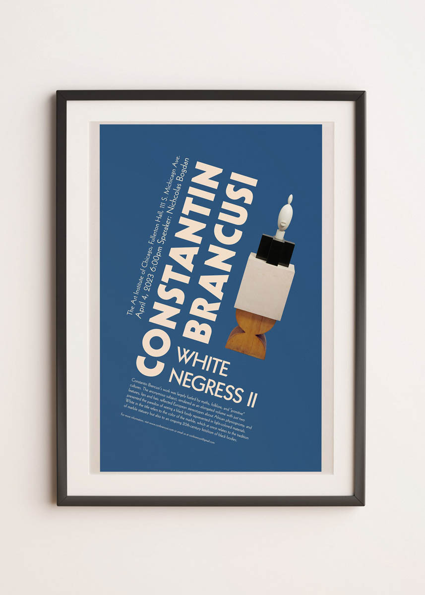

어서오세요

I am Kyujin Han, but you can also call me Jin. I am born in South Korea and I love soccer and graphic design. But as you can see I can't play soccer now, so I am a designer currently based in Chicago. My work focuses on creating a visual experience that is thorough and comfortable in graphic design and photography. Living in a visually-overwhelming time, my work aims to speak in a quiet, rhythmic, yet structural and logical way that exists in the digital world.
1969 LE MANS BOOK
Risograph print on paper, 5in x 5in
This book project focuses on depicting an event that happened over a linear time from start to finish. The form of the book was inspired by the race track used in the 1969 Le Mans race and the color comes from the iconic Ford GT40.


CONSTANTIN BRANCUSI LECUTRE POSTER
Inkjet on paper, 11in x 17in
This poster is for an imaginary lecture based on my favorite sculpture in the AIC collection. It focuses on typographical techniques for solving visual problems using type and tying it together with imagery.
mockup2.jpg) 

HOW TO DO A BICYCLE KICK
Inkjet on paper, 24in x 36in
This poster is based on the interpretation of Jorge Borge's "Museum, On Exactitude In Science". Since the story shows an incline and decline of a kingdom, the poster uses it as a metaphore to depict steps of doing a bicycle kick, which has a similar trajectory as the story.

MILES DAVIS POSTER
Inkjet on paper, 18in x 30in
This poster takes inspiration from a series of collages from a previous project. It aims to communicates Miles Davis music visually through color and abstract forms.


DOORS
Handmade book, Images shot on Kodak ColorPlus, 6in x 9in
"Doors" is a typology on doors within the loop of Chicago. The images focus on constructing emotions and meaning through the color of the doors and its surroundings.


back to top